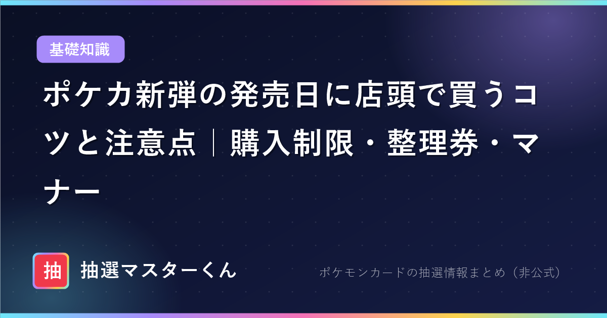

ポケカ新弾の発売日に店頭で買うコツと注意点｜購入制限・整理券・マナー

抽選に外れても、発売日に店頭で買えることがあります。ただ、人気の新弾は朝から人が集まり、すぐに売り切れることも。店頭で買うときのコツと注意点をまとめます。
事前に確認しておきたいこと
- その店舗で店頭販売があるか：抽選販売だけで、店頭販売をしない店舗もあります。店舗の公式Xやサイトのお知らせを確認しましょう
- 販売の方法：先着順か、整理券を配るのか、整理券の抽選なのかは店舗によって違います
- 購入制限：「1人○パックまで」「会員限定」など、条件が付くことがほとんどです
- 開店時間と並べる時間：開店前に並ぶことを禁止している店舗や商業施設もあります
買えるチャンスを広げるコツ
- ポケカの専門店以外も見てみる：スーパーや書店、家電量販店のおもちゃ売り場などで扱っていることもあります
- 発売日の数日後も見に行く：入荷が分かれていて、発売日以降に追加で並ぶこともあります
- 店舗の公式Xをフォローしておく：入荷や販売方法のお知らせが一番早く出る場所です
並ぶときのマナー
ポケカの発売日は、ルール違反の行列が問題になって販売中止になった例もあります。みんなが買えるように、次の点は守りましょう。
- 店舗が決めた時間より前に並ばない
- 通路や出入り口をふさがない、近隣の迷惑になる行動をしない
- 購入制限を守る。家族や知人を使って何度も並ぶのは控える
- 店員さんの指示に従う
買えなかったときは
人気の新弾は、発売後に追加の抽選や再販が行われることがよくあります。焦ってフリマアプリで高値の商品を買う前に、抽選一覧をチェックしてみてください。フリマで買う場合の注意点はこちらの記事にまとめています。
当サイトは非公式のファンサイトです。価格・日程などは記事公開時点の情報なので、最新の情報は公式サイトや各販売店でご確認ください。